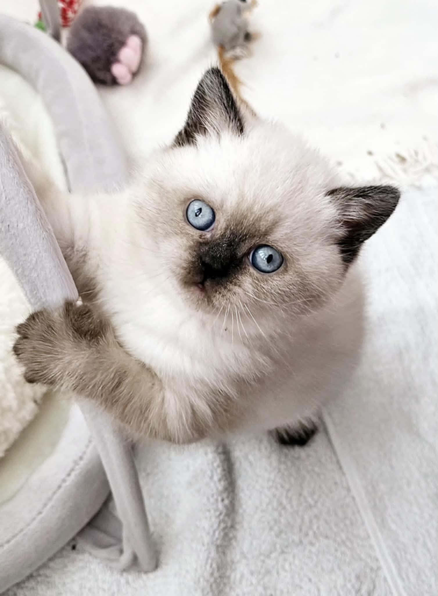
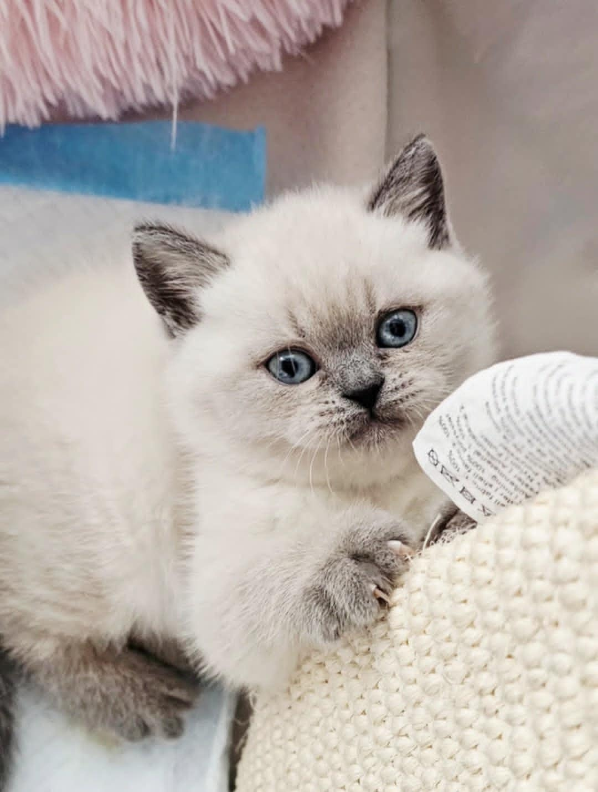

About Us
I am Diana and with the support of my family we have set up DianAvery -
a small hobby cattery. We are dedicated to breeding purebred British Shorthairs
and are proudly registered with the GCCF(Governing Council of Cat Fancy),
TICA(The International Cat Association) and several specialist cat clubs.
As a reputable breeder, we strictly follow all responsible breeding guidelines and adhere to a
specific code of ethics.
We pride ourselves on maintaining high health and temperament standards in our breeding
practices and raising healthy and adorable cats in a home environment, not in cages.
We have a special love for the Colourpoint coat pattern, which is why our breeding program
focuses exclusively on this variety. Some of our Queens carry the gene for long hair, so it's
possible one day we have British Longhair kittens.
Our adult cats come from champion bloodlines, ensuring that they possess the exceptional
qualities and distinctive characteristics that British Shorthair are known for.
Health and Veterinary Care
All of our breeding cats are DNA tested and genetically clear for
PKD (polycystic kidney disease), ALPS (autoimmune lymphoproliferative syndrome) and pd-
PRA (progressive retinal atrophy), which ensures that our lines are free of hereditary diseases.
We work closely with licensed veterinary practices and laboratories and regularly monitor the health
of our cats,
our queens during pregnancy, and the development of the kittens while they are with us.
About Our Kittens
If you are looking for a healthy BSH Colourpoint kitten, then you came to the right place!
Our priority is the health, well-being, and proper nutrition of our kittens!
We are interested in Quality, not Quantity, and we sharply differentiate ourselves from backyard
breeders!
All kittens are born and raised in our home and we are handled them daily from birth.
We give them lots of love, attention and constant contact with us as part of our family.
We let them play freely around our house.
They are exposed to normal household activity, other cats, and people to support stable
temperaments and confident transitions into their new homes.
